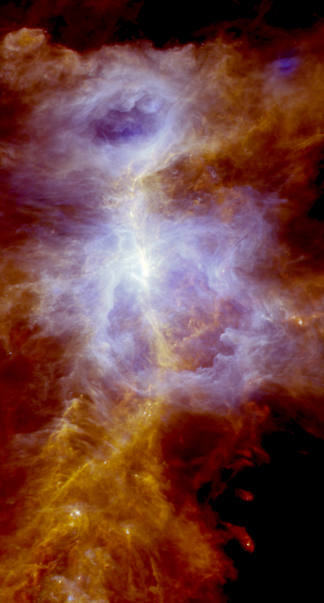

![]()
Based on (Abreu-Vicente et al. 2017)
Molecular Clouds and the Processes Inducing Star Formation
Stars are born in the densest and coldest regions of the interstellar medium (ISM), within vast agglomerations of molecules and dust known as molecular clouds (more information at Jorge Abreu-Vicente 2023). Due to their cold temperatures of about -250 degrees Celsius, molecular clouds do not emit in the optical range, appearing as black patches against the starry background in visible range images1. The light emitted by molecular clouds has a wavelength of between 60 and 1000 microns, about 100 times longer than the frequencies to which our eyes (between 0.4 and 0.7 microns) or optical telescopes like amateur ones are sensitive.
Far-infrared (FIR) astronomy is impossible from the ground, as our atmosphere blocks such radiation. Only the use of space telescopes like Herschel or Planck can allow for to the study of molecular clouds and the secrets of star formation physics.
Molecular clouds also emit in sub- and millimeter waves, which are observable with ground-based radio telescopes like the IRAM 30m Telescope at Sierra Nevada, Spain. In fact, we need the combination of space and ground observations to study molecular clouds in their entirety.
As shown in (Jorge Abreu-Vicente 2023), there is a direct relationship between the distribution of gas and dust in a molecular cloud and its star-forming activity. Specifically, molecular clouds with higher amounts of high-density gas form more stars than molecular clouds with low-density gas. In this project, we also comment that the current paradigm of the physical processes causing star formation has two main candidates: gravity and turbulence2. Although this work seems to decide for gravity, more direct and greater evidence is necessary for such a statement. The problem is that distinguishing between gravity and turbulence requires very precise measurements of the density or mass of molecular clouds.
This is one of the main scientific objectives of the launch of the European Space Agency (ESA) Herschel Space Observatory. The method used by Herschel to measure the density of molecular clouds is as follows. Molecular clouds emit following the Planck’s Law. This means that the molecular cloud emits as a body in thermodynamic equilibrium and therefore its emission is determined by its temperature and density. The emissions of molecular clouds as a function of the emitted wavelength can be observed in Figura 1. In this figure, 5 vertical shadows are observed, corresponding to the wavelengths to which Herschel is sensitive. For each of the curves, the wavelength at which the maximum emission occurs is determined by the temperature of the molecular cloud. Also, the value of this maximum on the vertical axis is related to the observed gas density. The higher the gas density, the greater the emission. Thus, knowing the empirical function of Planck’s Law and having the five values from Herschel, we can make an adjustment of the observations to obtain the temperature and density of the molecular cloud being observed.

The Calibration Problems of Herschel and the Consequences for Research
The challenge we face is the following: Herschel’s observations at 100 and 160 microns have not been properly calibrated. Poor calibration of instruments inevitably leads to erroneous or less precise measurements. If we aim to measure the gas density in molecular clouds to discern whether gravity or turbulence induces the gravitational collapse process that leads to star formation, we need to improve this instrumental calibration. The fact is that the observational difference predicted by models to discern between turbulence and gravity is so subtle that the necessary observations must be extremely precise. The objective of this work is to improve the calibration of the instruments and generate the most accurate temperature and density maps ever obtained of the entire galactic plane.
The definition of the sky level or zero level of the emission observed by Herschel at 100 and 160 microns is not well defined, generating inaccuracies in the measurements. The goal of this work is to combine the observations of Herschel and Planck to improve the zero-level calibration, thus obtaining more precise maps of temperature and density of the galactic molecular clouds. This will help to improve our understanding of which process is responsible for inducing star formation activity.
The calibration of these bands was originally carried out under the assumption that the sky emits uniformly across the entire field of view. This is definitely false. To put it mildly, it might be called an oversimplification. In regions of high emission due to dust, such as the galactic plane, the variation in emission is so significant that assuming a constant sky background results in a calibration as accurate as throwing three twenty-sided dice and trying to predict their exact outcomes. Without accurate calibration, it’s impossible to measure precise densities or temperatures of molecular clouds, which consequently means that it is not possible to determine which physical processes are acting in star formation. Calibration errors, although they may be small for the most compact objects (small in image extension), become huge and unpredictable on a large scale, in the more diffuse areas of the molecular clouds. This exacerbates our problem, as it is in these large-scale diffuse areas where most of the mass of molecular clouds is found. These are also the areas that show the least star formation activity and are therefore the most interesting to study in order to discern which processes cause a diffuse area to become dense and consequently form stars.
Combining Data from Herschel and Planck for More Accurate Temperature and Density Maps
In this work, we take advantage of the launch of another space observatory that, although intended for a completely different mission (measuring the echo of the Big Bang), provides us with the necessary tools to recalibrate Herschel’s observations. The Planck observatory generated large-scale, full-sky observations in its search for the cosmic microwave background. To achieve its goal, Planck had a small obstacle. Measuring the cosmic background radiation means knowing what’s behind our own Galaxy: the Milky Way. Therefore, Planck had to subtract the emission of our Galaxy, as it blocks the cosmic background radiation being between it and us. As a result, Planck generated very precise maps of the sky’s density and temperature, although at higher angular resolutions than those of Herschel. We can use these maps to recalibrate Herschel’s images.
In this case, Planck provides us with the temperature and density of each point in the Milky Way. We take this information and perform a reverse engineering of the process shown in Figura 1. Using the temperature and density of the gas obtained at each point in the Milky Way with the Planck telescope, we can calculate the theoretical emission of each point in the Galaxy using Planck’s Law.(Unfortunately, we have to use the name Planck to mention two different objects. Note that Planck’s Law is the mathematical function of molecular clouds’ emission, while Planck in italics refers to the telescope.) Now, knowing the theoretical emission of each point in the galaxy and also knowing the exact sensitivity of Herschel to each wavelength, we can obtain simulated images of what the Planck telescope would see if it had the same instruments as the Herschel telescope. In this case, we also know that Planck’s calibration is very precise, as this is a key requirement for the success of the Planck mission. Ultimately, we can use Planck’s observations to correct Herschel’s large-scale calibration problems, thus obtaining the best existing map of density and temperature of the Milky Way.
The reader may wonder: if Planck already has the maps of density and temperature… Why not just use them and save ourselves all this arduous work? The answer is that Planck is a much smaller telescope than Herschel. This translates to Planck having significant myopia compared to Herschel. In other words, Herschel’s observations are much sharper and reveal subtler details than those of Planck. It’s as if Herschel uses glasses to correct the myopia of Planck. Specifically, at 100 and 160 microns Herschel can see details 12 and 17 times smaller, respectively, than Planck. This can be clearly observed in Figura 2, Figura 3, and Figura 4. This is especially important, as it is in those small details revealed by Herschel where we must look for the answers to open questions about the star formation process.

Due to the very specialized and intense technical explanation required for this process, we do not delve deeper into this post, referring the reader to (Abreu-Vicente et al. 2017) for more information. As a brief summary, we can say that the technique used follows a series of steps:
Obtain simulated emission maps of how Planck would observe using the same instruments as Herschel.
Joint calibration of the data from Herschel and Planck. Ensure that both are on the same scale.
Combine the images of Herschel and Planck in the Fourier space.
The results obtained with this technique have proven to be truly spectacular. To demonstrate their validity, we first applied the method to a simulated molecular cloud, of which we could know exactly its real density and temperatures. After validating the method, we applied it to two test regions: Orion and Perseus. The latter can be seen in Figura 5. The application of our method has improved the estimation of masses observed by Herschel in Perseus by values of up to 30%. In general, our method is capable of correcting the masses (equivalent to densities in the methods used) of molecular clouds by factors varying from 1 to 100. This achievement is truly impressive and is currently being applied to the entirety of observations of the Milky Way carried out by Herschel. Once completed, we will have achieved the most accurate map of temperature and density of molecular clouds in the Milky Way to date. Thanks to this work, we finally hope to contribute to the answer to the enigma of turbulence or gravity as the main cause of star formation.

Referencias
Notas
The visible light range is the light emitted at frequencies sensitive to our eyes. For more information about the electromagnetic spectrum visit WikiPedia↩︎
Although not mentioned in these works, there is a third process believed to induce the onset of the star formation process. This is the compression of molecular clouds by radiation from massive stars or supernova explosions (Li, Frank, y Blackman 2014).↩︎
Cómo citar
@online{jorge abreu-vicente2023,
author = {Jorge Abreu-Vicente, Dr.},
title = {Goolgles for *Planck* and *Herschel*. Enhanced calibration of
*Herschel* and *Planck* Data in the Galactic plane},
date = {2023-11-01},
url = {https://drAbreu.github.io/en/posts/2023-11-01-best-fir-view-milky-way/},
langid = {es}
}